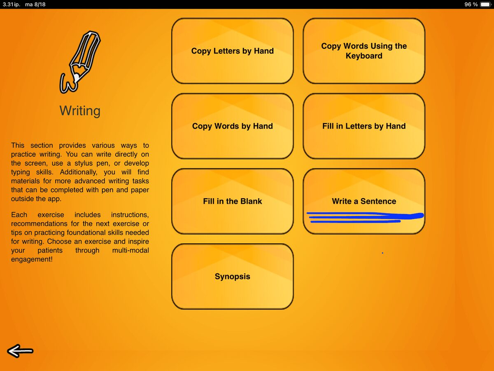
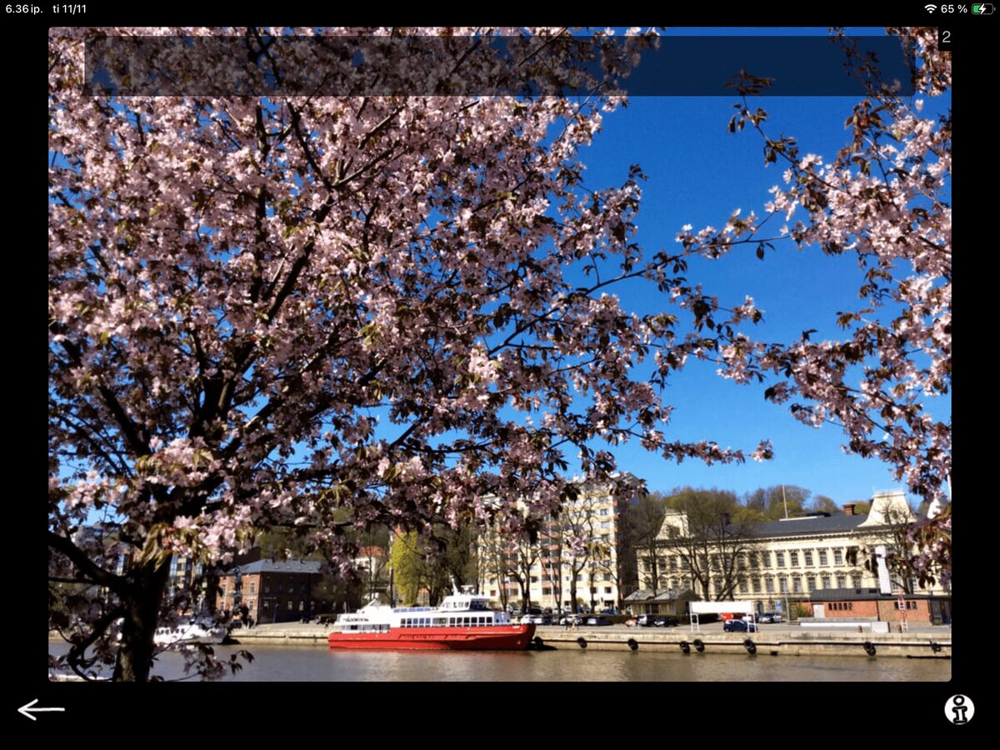
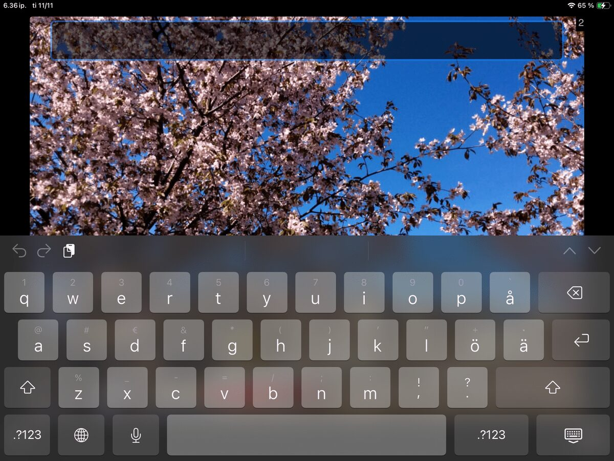

Let’s start the new year with a surprisingly complex and versatile task from our Writing category: Write a Sentence.

In this exercise you show a picture to your client and ask them to come up with and write down a sentence based on that image. This is a very open-ended task. While the image provides some context, there’s still quite a bit of thinking to do before we even get to think about writing.
First, your client needs to decide what to focus on in their single sentence.

If I were to talk about this sample image freely, I might say: It looks like springtime in a city that has with a river running through it. There are big trees with pink flowers, and a red boat on the river. I don’t see any people walking, even though it looks like a lovely day. If I lived in that city, I think I’d enjoy a walk along the riverside on a day like that. Looks like it might be a bit cold though.
For the writing task, the client needs sift through all of the visual information and make a plan: What do I see? What do I want to say? What information do I focus on? What information do I leave out? What can I say in one sentence? How do I find and organize the words to convey what I want to say? That is wide range of cognitive and language skills at play.
It can be beneficial to give a few example sentences to get started. Some example sentences from our image could be:
It is springtime and the trees are blooming.
The trees have pink flowers on them.
A big red boat is moored at the riverside.
It is a sunny day in the city.
You can use the examples as a starting point for a collaborative brainstorming session. These are some of the things I see. Are they the same or different things that stand out to you? What would you like to focus on? Some clients can benefit from choosing a sentence from examples you provide to get started. After completing a few tasks like this, they might be ready to come up with a concept and a sentence independently.
The next, step, physically writing a sentence, calls for coordination of several executive processes at once. These include holding the idea in working memory, finding correct content words, planning the sequence of words, monitoring accuracy, and adjusting along the way. What looks like a simple act of “writing a sentence” is, in fact, a rich exercise in goal-directed behavior that draws on planning, organization, self-monitoring, and cognitive flexibility.

Also note that when you bring up the keyboard, it covers most of the picture as you see here.
That means the client needs to keep the image in mind while writing. This adds a small but important challenge of encaging visual memory and mental representation.
Adjusting the Difficulty
You can easily tailor this task to different goals:
– Support the planning process. Ask your client to talk about the picture first and jot down notes. Use these notes to guide the idea selection word finding. For example: Which aspect you would like to focus on: the weather, the trees or the boat? Then prompt for detail: What would you like to say about the boat? Is it big or small? What color is it?
- Set restrictions. For example, limit the sentence length: Your sentence can’t have more than four words.
– Prompt specific vocabulary. For example: Can you include the word spring?
There are 140 images in this exercise. When you open the task, 15 are randomly selected for you to choose from by swiping back and forth. No restictions of forced task sequence or rigid right answers, but space and flexibility to engage in meaningful, reciprocal work.